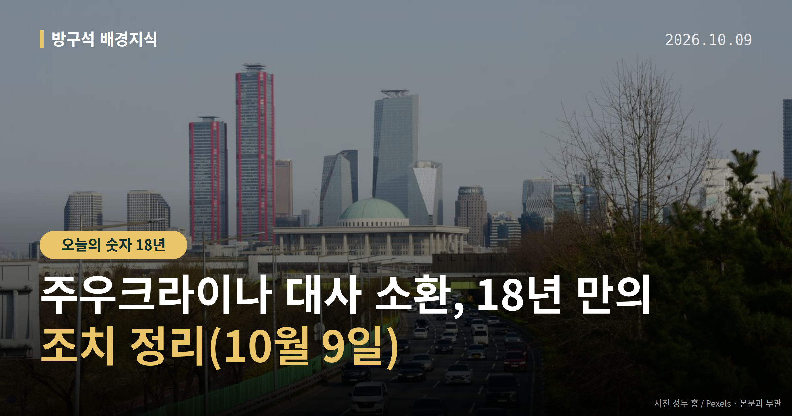
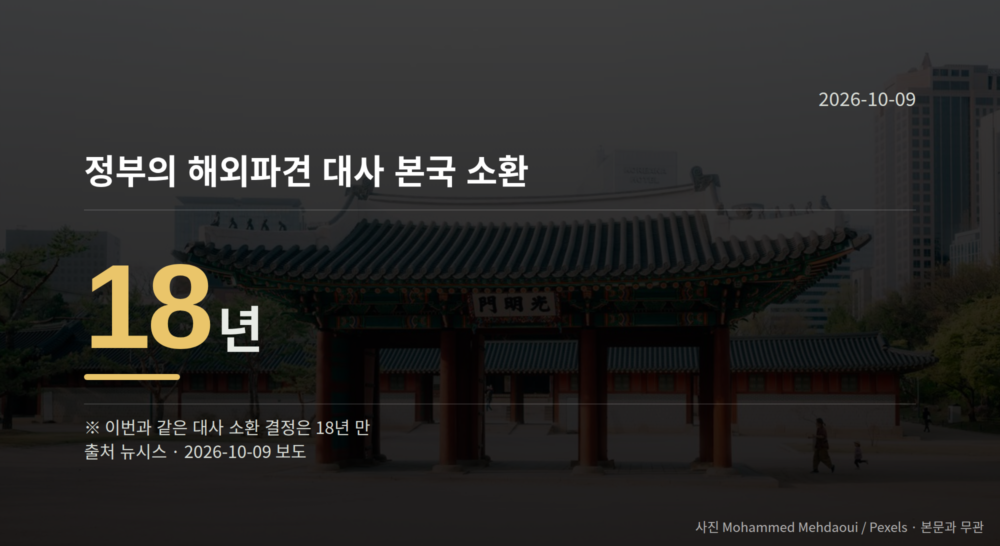

이 글은 2026년 10월 9일 기준으로 정리한 내용입니다.
안녕하세요, 방구석 배경지식입니다. 8일 정부가 주우크라이나 대사 소환을 결정했습니다. 북한군 포로 송환 사실이 사전 협의 없이 공개된 데 따른 항의 조치입니다.
같은 날 국회에서는 법무부 국정감사를 둘러싼 여야 공방도 이어졌습니다.
외교부는 8일 "정부는 주우크라이나 대사를 본국으로 소환하기로 결정했다"고 밝혔습니다.
이는 우크라이나 정부가 한국과 충분한 사전 협의 없이 북한군 포로 송환 사실을 공개하고, 비공개 합의를 부정하며 공개 사과도 거부한 데 따른 조치로 풀이됩니다.
앞서 외교부는 지난달 28일 주한우크라이나대사대리를 초치(상대국 공관 관계자를 외교부로 불러 항의 뜻을 전하는 절차)해 강력한 유감을 표명하고 사과를 요구한 바 있습니다.
우크라이나 측 입장도 나왔습니다. 우크라이나 외무부는 8일(현지시간) 한국 정부의 결정에도 한국과 건설적인 대화 재개에 열려 있다는 입장을 밝혔습니다.
다만 키이우 측의 공식 반응이 아직 없다는 보도와 위 입장 표명 보도가 함께 있습니다. 시점에 따라 반응이 달라 보일 수 있다는 점은 감안해서 보시면 좋겠습니다.
정부가 해외에 파견한 대사를 본국으로 불러들인 것은 18년 만이라고 뉴시스는 전했습니다.

대사 소환은 초치보다 한 단계 높은 외교적 항의 조치로 분류됩니다. 보도에 따르면 다음 단계로 외교관 추방이나 공관 철수가 거론되지만, 외교부 내에서는 그 가능성이 낮다는 시각이 많다고 합니다.
즉 이번 결정은 항의 수준을 한 칸 올린 조치이고, 관계를 끊는 단계와는 거리가 있다는 뜻으로 읽힙니다.
박기창 주우크라이나 대사는 이르면 이번 주말께 귀국할 계획입니다. 다음 주초 조현 외교부 장관에게 우크라이나 측 입장과 현지 동향, 대응 방안을 대면보고한다는 일정입니다.
현지 상황에 따라 이 일정이 지연될 가능성도 함께 전해졌습니다. 주우크라이나 대사 소환 이후 정부가 추가 협의에 나설지가 다음 관전 포인트입니다.
국회의원 발의 법률안 110건. 가장 최근은 지능형 로봇 개발 및 보급 촉진법 전부개정법률안(백혜련의원 등 10인).
본회의 처리 법률안 3건 — 철회 3건
이번 주 등록된 선거 여론조사 8건
열린국회정보·중앙선거여론조사심의위원회 자료를 직접 셌습니다. 여론조사의 자세한 사항은 중앙선거여론조사심의위원회 홈페이지를 참조하세요.
외교 갈등 소식을 들을 때 여러분은 어느 대목부터 궁금해지시나요, 사실관계일까요 아니면 다음 절차일까요?
댓글로 알려 주시면 다음 글에 반영하겠습니다.